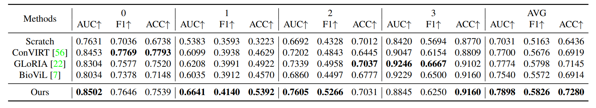

|
|
|
|
|
|
|
|
|
|
|
Code [GitHub] |
Paper [arXiv] |
Cite [BibTeX] |
R1: Zero-shot Classification
Comparison with other state-of-the-art methods on zero-shot unseen disease ``Covid-19'' classification task. AUC, F1 and ACC scores are reported. ``Direct covid-19'' refers to directly use ``Covid-19'' to construct the prompt sentence while ``Covid-19 Description'' refers to replace the name ``Covid-19'' with its medical description.
The radar figure of our method and other methods of 14 diseases on Chestx-ray14 datasets AUC scores are reported and, as shown, our method exceeds the previous state-of-the-art on most diseases.
R2: Zero-shot Grounding
Comparison with other state-of-the-art methods on zero-shot region grounding tasks. (a) shows the results on RSNA Pneumonia dataset. (b) shows the results on SIIM-ACR Pneumothorax dataset. The pneumothorax region tends to be thin and narrow and much more challenging for grounding, we thus only consider pointing game, recall and precision. Our method can achieve better performance on different metrics, especially on Pointing game score. ``ConVIRT'' as the basic method proposed earliest can not realize this function.
Comparison with other state-of-the-art methods on zero-shot unseen disease Covid-19 grounding task. ``Direct covid-19'' refers to directly use ``Covid-19'' to construct the prompt sentence while ``Covid-19 Description'' refers to replace the name ``Covid-19`` with its medical description. Our method can achieve better performance on different metrics.
R3: Fine-tuning Classification
Comparison of AUC scores with other state-of-the-art methods on fine-tuning classification task. The macro average of AUC scores on 14 diseases are reported for ChestX-ray14 dataset.
Comparison of Dice scores with other state-of-the-art methods on fine-tuning segmentation tasks. Three diseases are reported, for each disease, three data portions, 1%, 10%, 100% are adopted to show the performance change.
R3: Fine-tuning Grading (Fine-grained Classification)
Comparison with other state-of-the-art methods on fine-tuning edema severity grading muti-class classification task. AUC score is reported in the Table. ``0,1,2,3'' in table represents the severity level and final macro average scores are reported.

R4: Ablation Study
Ablation study on zero-shot classification task. ``PosCL'' refers to the position contrastive loss and ``DE'' refers to the description encoder.AUC, F1 and ACC scores are reported. For ChestX-ray 14, the metrics all refer to the macro average on the 14 diseases.
Ablation study on zero-shot grounding tasks. (a) shows the results on RSNA Pneumonia dataset. (b) shows the results on SIIM-ACR Pneumothorax dataset.
Based on a template by Phillip Isola and Richard Zhang.